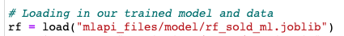

Welcome!
Hi everyone, this will be my Data Science blog. It will be all about how I'm applying my Data Science skills at work. I'm also going to be sharing what I've been learning.
Senior Project
For my job and for the senior project I was tasked with creating a Machine Learning API. It's a simple API service that let's you send a new instance of job information against my random forest model built in scikit-learn. You could either enter the job information through the GUI or through a url request.
Example of URL Request
API GUI

Why are APIs needed?
First, you might ask yourself, "What is an API?" API stands for an application programming interface, or an interface that gives you the ability to interact between software programs that you may be using. For example, at my job my boss tells me to do one thing related to data science and my boss will tell another thing to a software developer related to web stuff. Both the software developer and I have to create apps (software) for different reasons but in this case an API is a way for the software developer's apps to integrate with my apps.
So, hopefully now you understand what is an API now let's talk about why it's important. An API starts becoming important when companies, individuals, or organizations need a certain but many software's to help run their business. The company probably needs an API for the accounting department, one for the project managers, one for IT department etc. The need to tie these API's together is becoming increasingly important. So, in my case for the company I work for, the software developer created this web service that allows sales representatives to enter job information to produce an estimate/bid for customers that need a roof replacement or install. For almost about a year I've been working on a predictive model that can predict whether a customer is going to sign a contract or not. By entering job information I can tell the sales representatives if that customer is going to want to sign a contract with the company to install or replace their roof. So, how do you integrate the software developer's app with my predictive model? Through an API.
How the API Service was Accomplished
I made the API service with Python's Flask Library. The nice thing about Python is that it's a Web tool and also a data science tool. I need to make it aware that I didn't build this service from scratch. A recent graduate from Brigham Young University - Idaho, Brandon Jenkins, built an API Service predicting whether a house was built before 1980. I studied his code and I built my own API service. I'm not a natural web developer so I need help. I'm thankful that there are people that came before me and figured it out.
Let's look at some code
Python Code
So I think first we need address that even though the API service is built in python you still had to write in HTML & CSS code. You need a templates folder that has HTML pages that python can refer to.
Example
The python code starts out with creating a decorator. A decorator is whenever you have a function and you see an @ symbol at the starting. Basically, a decorator takes a function and adds some functionality and returns it. So, for this example the function needs to return the "isAlive.html" file but the app needs to route or map the URL. In other words we are connecting the URL to the function.
My API Code
API through URL
- 
-
So the first thing that we have to do is load the model. In your .py file (you can name it anything you'd like) you can create any model that you like and call
the python library 'joblib' to save your model.
-
The next thing to do is create a function that will take in 'request parameters' (job information) and create objects out of them.

-
Pass those objects (parameters) into a numpy array.
-
Then you want to return that new prediction on that new instance.